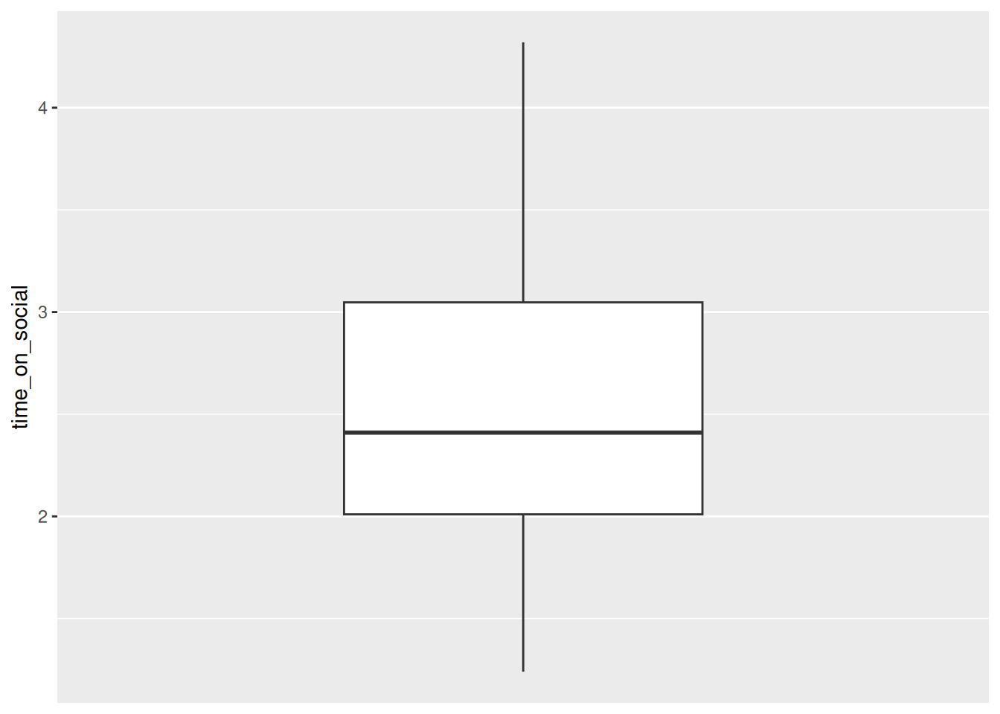
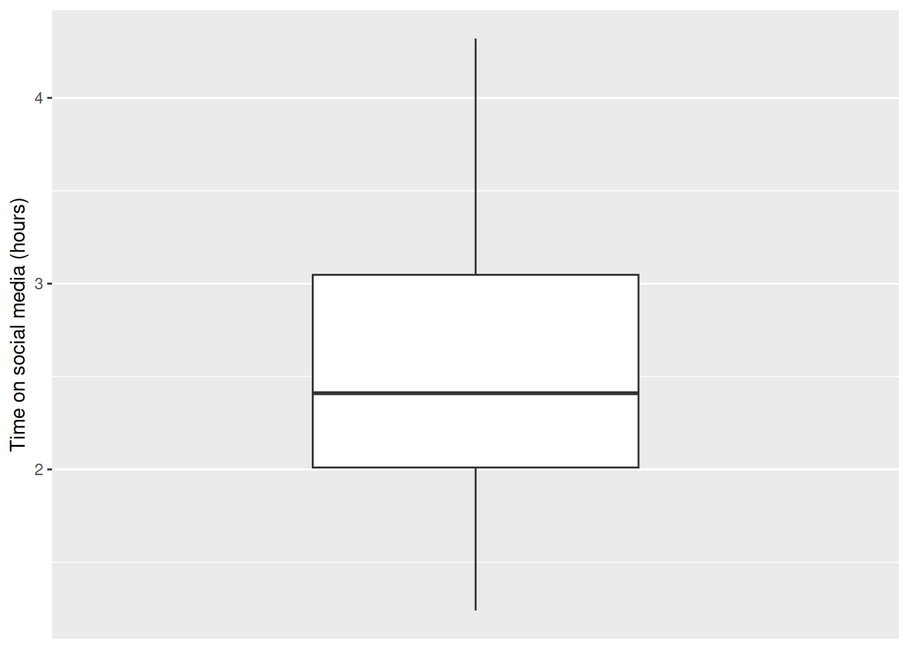

Chapter 3 Data wrangling and visualisation
Data analysis in Psychology and any other discipline is 90% data wrangling and 10% actual analysis. This week we will start to understand how to manipulate and visualise data using R.
As usual, download the zipped lab folder from the Moodle page for this week and unzip it somewhere sensible on your computer. Double click the .Rproj file to open RStudio, and open the.R script file to get started.
3.1 Checking installation and loading packages
Before we can begin any script we first need to make sure that the required packages are installed in our version of RStudio. Next, we can load the required packages to be used in the script, using the library() function. Copy and paste the code block below into your script in RStudio and try running it.
R Coders always start their scripts by loading all the packages need to run all the code contained within the script.
3.1.1 Activity: Load your packages
# Check if packages are installed, if not install.
if(!require(here)) install.packages('here') #checks if a package is installed and installs it if required.
if(!require(tidyverse)) install.packages('tidyverse')
library(here) #loads in the specified package
library(tidyverse)Note that in the code above, we’ve added a fancy if statement to check if the packages are installed. If they are not installed, it will install them for you. This is a good practice to ensure that your code runs smoothly on any computer without needing to manually install packages. Particularly if you are using the computers in the School of Psychology (UNSW), where we have already installed the packages you need (and we ask you not to install any more!).
3.2 What do packages do?
You should be able to see that we have installed and loaded 2 different packages. Let’s first go over the basics of what a package is. In its simplest terms, a package is a toolbox that someone has created for us in R that makes our life easier. These packages build on the basic code that comes with the R programming language (what RStudio uses to run), called base R.
Figure 3.1: The equivalent of loading an R package
3.3 What do these packages do?
It is always a good idea to check the documentation for a package before you use it. We can do this by using the help syntax, which is the ?. The package we are trying to get help with is called here.
3.3.1 Activity: find out about packages
Copy and paste the below line of code to find out more about the here package. This will open a help page that tells us the purpose of the package and how it works.
Handy hint: If you find the help page too overwhelming, try scrolling to the bottom and looking for the ‘Examples’ section. This will show you some simple code that uses the package.
3.4 Organisation and CSV files
You should notice that the zipped folder you downloaded contains a few extra files and folders, compared to last lab. Generally, the file and folder structure will follow what you have here for the remaining labs.
Here is a quick guide to what is there:
- An R Project file called ‘2_Data_wrangling_and_visualization.Rproj’ Use this to open RStudio.
- A script called ‘data_wrangling_and_visualization.R’.
- A text file called README.txt’, which contains information about the data. It is exceptionally good practice to make sure that your projects contain a README file that explains what the data is about. Hint: always read the README file.
- A folder called Data, containing a .csv file called ‘PSYC2001_social-media-data.csv’
- A folder called Output, which is where all your output will go.
These are the key ingredients needed to organise all projects in R.

Figure 3.2: Project Organisation
You will notice that the data for today, called PSYC2001_social-media-data.csv, is a csv file (short for a Comma Separated Value file). Read the README.txt file to learn more about the data, if you haven’t already. And if you haven’t already, why not? Always read the README file.
csv files are a common and handy way to store data, because they can be read by heaps of different programs, like Excel, Google Sheets, and R. They are simple text files where each line represents a row of data, and the values in each row are separated by commas. Try double clicking on the csv file now to see what happens. You’ll see that Excel offers to open it for you. Click ok to open the file in Excel and take a look at how the data looks. Then say ‘that’s very kind of you Excel, but we are more powerful than you. We R.’
Figure 3.3: Social Media Data in Excel
3.5 Importing your Data in R
We are now going to load our first dataset into R. To do this we will need to import the dataset using a function capable of importing csv files.
3.5.1 Activity: Import the data
We will be using two different functions to achieve this. The read.csv() function is used to import our csv dataset and it comes from the utils package which is part of base R. But the read.csv() function needs to know where the file lives on the computer. To do this, we use the here() function from the here package. This function tells R the location of the project we are working from, to make locating the data easier.
Let’s first confirm that here() knows our current location on this PC (called the ‘Working Directory’), by typing the following code into the console and hitting enter:
This should return the file path to the folder where the .Rproj file is located.
Because here can return where the folder lives (i.e. the file path), we can use this to easily find where our file is located and read it in. Thanks, here!
You will see in your script that we’ve started this line of code for you. Copy and paste what is missing into your script and run it (or type it yourself, if you are seeking digital liberty).
If you are still unsure what we mean by ‘file path’ then please google it, google it now.
Now that we have read in our data, we have saved our data to an object called social_media. You can see this in the Environment tab in the top right section of your screen. Importantly, this particular object is a dataframe. A dataframe is a special type of object in R that is used to store data tables. It is similar to an Excel spreadsheet, or a data frame in Python’s pandas library. Dataframes are very useful for data analysis because they allow us to easily manipulate and analyze data.
Warning: If you have an error, that’s all part of coding! But do make sure you ask your tutor for help :)
3.6 Having a look at our data
Our data should now be imported into R!
Recall from the README.txt file (you definitely should have read this by now) that this dataset was collected as part of an experiment investigating social media use in young Australian adults. Sixty young adults answered questions about their social media usage as well as their political attitudes. Data about their social media usage (e.g., likes) was collected while they used their preferred platforms under various conditions.
The variables in the data are:
id– a unique identifier (S1–S60)age– age in yearstime_on_social– average hours/day on social media (self-report diary)urban– urban (1) or rural (2) area (based on postcode density) -good_mood_likes– likes/10 min during a good mood (from platform + diary)bad_mood_likes– as above, but during bad moodfollowers– average number of followers across platforms
The next 3 columns are political attitude subscales:
informed– how politically informed they feel (e.g., read news daily)campaign– how much they engage in campaign-related discussionactivism– involvement in activism (e.g., protests, petitions)
We should now check that we have imported into Rstudio matches this description (and what we saw when we opened it in excel). There are a couple of ways to do this.
3.6.1 Activity: View the data. Always, always, view the data.
It is incredibly important to have a look at the data you are analysing. This will quickly tell you if what you are planning to do is sensible, or if things are likely to go horribly wrong. The main thing to remember when running analysis is: garbage in, garbage out. If your data is rubbish, your results will be rubbish. So always check your data first.
- The first way is to manually click through to the dataset. You can do this by:
- Clicking on Environment in the top right section of your screen.
- Clicking on social_media.
- You should see a new tab pop up with the data in a table-like format (this is called a dataframe).
- Make sure that this new tab looks similar to what you saw when you opened Excel file.

Figure 3.4: Navigating to dataset
- We can also do this programmatically using the code below. We’re taking you through some different ways of viewing data.
Type the below into the console and run it.
This will print the entire dataset to the console. This is not ideal for large datasets, but it works ok-ish for small ones like this.
Now adjust the next bit of code in your script so that it exactly matches what you see below, and run it. You can also see from the comments how the data will appear.
# Method 2 - Use the View function
View(social_media) #view automatically displays the dataset in a tab.Sometimes, you only want to get a sense of what the data looks like, without printing the whole thing to the console or opening a new tab. The next two methods do just that.
Copy and paste both of the below lines of code into your script and run them.
# Method 3 - Use the head function
head(social_media) #head displays the first 6 rows of each variable.## id age time_on_social urban good_mood_likes bad_mood_likes
## 1 S1 15.2 3.06 1 22.8 46.5
## 2 S2 16.0 2.18 1 46.0 48.3
## 3 S3 16.8 1.92 1 50.8 46.1
## 4 S4 15.6 2.61 1 29.9 29.2
## 5 S5 17.1 3.24 1 37.1 52.4
## 6 S6 15.7 2.44 1 26.9 20.2
## followers polit_informed polit_campaign polit_activism
## 1 173.3 2.3 3.2 3.6
## 2 144.3 1.6 2.2 2.6
## 3 76.5 1.9 2.7 3.0
## 4 171.7 1.6 2.3 2.6
## 5 109.5 2.0 2.9 3.3
## 6 157.5 2.4 3.4 3.9# Method 4 - Use the str function
str(social_media) #displays an overall summary of the object and variable structure.## 'data.frame': 60 obs. of 10 variables:
## $ id : chr "S1" "S2" "S3" "S4" ...
## $ age : num 15.2 16 16.8 15.6 17.1 15.7 19.7 18.6 19.6 15.5 ...
## $ time_on_social : num 3.06 2.18 1.92 2.61 3.24 2.44 1.46 1.52 1.92 2.1 ...
## $ urban : int 1 1 1 1 1 1 1 1 1 1 ...
## $ good_mood_likes: num 22.8 46 50.8 29.9 37.1 26.9 14.8 26 6.5 45.7 ...
## $ bad_mood_likes : num 46.5 48.3 46.1 29.2 52.4 20.2 35.1 35.8 12.2 32.8 ...
## $ followers : num 173.3 144.3 76.5 171.7 109.5 ...
## $ polit_informed : num 2.3 1.6 1.9 1.6 2 2.4 1.7 1.6 1.5 2.2 ...
## $ polit_campaign : num 3.2 2.2 2.7 2.3 2.9 3.4 2.4 2.2 2.1 3.1 ...
## $ polit_activism : num 3.6 2.6 3 2.6 3.3 3.9 2.7 2.6 2.4 3.5 ...You should now have a good idea of what PSYC2001_social-media.csv looks like in RStudio. You should also be able to see that its a lot like what we saw in excel.
You will also notice that the last function, str(), displays a summary of the object. This includes:
- The object type (a dataframe)
- The number of observations/rows (60)
- The number of variables/columns (10)
- The datatype: chr for
id, and num for all other variables
Question: Please discuss with your deskmate and tutor what you think chr and num mean.

Figure 3.5: You thinking
3.7 Checking the quality of our data
Once we have imported our dataset into R, it’s important to check the quality of the data. One simple way to do this is by using the summary() function.
3.7.1 Activity: Summarise the data
Copy and paste the below line of code into your script and run it.
## id age time_on_social urban
## Length:60 Min. :13.90 Min. :-999.000 Min. :1.0
## Class :character 1st Qu.:15.70 1st Qu.: 1.920 1st Qu.:1.0
## Mode :character Median :16.50 Median : 2.365 Median :1.5
## Mean :16.87 Mean : -30.845 Mean :1.5
## 3rd Qu.:17.43 3rd Qu.: 3.042 3rd Qu.:2.0
## Max. :23.00 Max. : 4.320 Max. :2.0
## good_mood_likes bad_mood_likes followers polit_informed
## Min. : 6.50 Min. :12.20 Min. : 61.40 Min. :0.600
## 1st Qu.:31.60 1st Qu.:39.08 1st Qu.: 76.47 1st Qu.:1.500
## Median :45.90 Median :49.30 Median :116.30 Median :1.800
## Mean :43.04 Mean :49.84 Mean :124.76 Mean :1.858
## 3rd Qu.:53.40 3rd Qu.:58.75 3rd Qu.:153.75 3rd Qu.:2.200
## Max. :89.20 Max. :91.20 Max. :336.50 Max. :3.400
## polit_campaign polit_activism
## Min. :0.800 Min. :0.900
## 1st Qu.:2.100 1st Qu.:2.400
## Median :2.550 Median :2.900
## Mean :2.602 Mean :2.977
## 3rd Qu.:3.100 3rd Qu.:3.500
## Max. :4.800 Max. :5.500Question: Do you notice anything unusual in the output of this data ? Discuss with your neighbour and tutor.
Hint: Take a closer look at the time_on_social variable.
3.8 Cleaning the data
It should now be clear that this data is unusual because it has a minimum value of -999 in the time_on_social variable which is measured in hours (we can’t have negative time !).

Figure 3.6: Negative time would be back to the future!
A good question to ask now is - why are these values in the dataset?
Sometimes when collecting data, we can’t get a response from every participant. Instead of leaving a blank, researchers will sometimes put in a placeholder value like -999 to show that the data is missing. These aren’t real numbers; they just mean the data wasn’t recorded. But -999 isn’t the standard way to show missing data in R. R uses NA to represent missing values, and that’s important because most R functions know how to handle NA properly but they don’t know to ignore -999.
3.8.1 Activity: Find and replace -999 values
Lets first have a look at how many -999 values are present in the data. We can do this by using the filter() function from the tidyverse package which is used to keep (or remove) rows based on certain conditions.
social_media_filtered <- filter(social_media, time_on_social == -999) #keep all rows where `time_on_social` is equal to -999
View(social_media_filtered) #view the filtered dataframeHandily, we can then use the count() function from the tidyverse package to sum the number of rows in the resulting dataframe.
## n
## 1 23.9 Introducing Piping
A short aside to introduce a very special operation called a ‘pipe’ or %>%. This operation is part of the tidyverse package and allows you to pass the result from one function to the next seamlessly in a sort of assembly-line like fashion. Throughout the rest of the course we will be using ‘piping’ as it is easier to follow and code. For instance, lets repeat what we just did above but with pipes instead.
3.9.1 Activity: Pipe with pipes
Copy and paste the below code into your script and run it.
social_media %>% #pass the values from social_media to the filter function
filter(time_on_social == -999) %>% #keep all rows that are equal to -999 and pass the result to count
count() #count the number of remaining columns## n
## 1 2The answer should be satifsyingly the same as before. When coding, it is often a good idea to check you get the same answer by doing things in different ways. Then you know your code is doing the right thing and you can sleep well at night.
Info: Piping is not friends with every function. Some functions will not accept inputs from pipes (no matter how nice they are !). This will become clearer as we code throughout this course.
Now lets use a piping method to clean this data up by replacing -999 values with more R readable NA values. NA stands for ‘Not Available’ and is the standard way to represent missing data in R. We can do this using the mutate() and na_if() functions from the tidyverse package. The mutate() function is used to alter or make new columns in a dataframe based on the conditions we specify and na_if() is used to replace given values with NA in a dataframe.
Copy and paste the below code into your script and run it.
social_media_NA <- social_media %>%
mutate(time_on_social = na_if(time_on_social,-999)) #mutate alters columns and rows. na_if replaces -999 with NANow, very importantly, lets check that this worked by using the summary() function again.
Re-use the summary() function in your code below the relevant comment. The one that says:
3.10 Exporting Data
It would be a good idea to save this dataset for future tutorials, so that we don’t have to replace -999 values with NA values every single time.
We can do this with the write.csv() function from baseR. This function takes a dataframe in R and saves it as a .csv file on your computer. Later, we can simply read that csv back into R, and it will already be cleaned.
3.11 Data visualization using ggplot2
Visualizing data is a crucial step in data analysis. You should never run a statistical analysis without first visualising your data. It helps us understand the distribution of our data, identify patterns, and communicate our findings effectively. It also helps us identify whether the data is suitable for the analysis we want to perform, or whether some weird values remain that could influence the result of our statistical tests, and even worse, our interpretations!
So, let’s look at some data! We’re going to start by visualising the time_on_social variable.
To do this we will need to use the ggplot() function. This is the main function from the ggplot2 package which handily, comes for free with the tidyverse package. ggplot() provides the canvas of the graph you want to make.
To make the basic canvas ggplot() requires two things:
The data that you want it to plot.
The variables to go on the x and y axes.
Importantly, ggplot() only provides the canvas. It does not draw anything by itself. You have to add layers to the canvas created by ggplot() by using other functions that can create bars, points or lines !
3.11.1 Activity: Create a boxplot in ggplot()
First, let’s test what happens when we use ggplot() by itself. Complete the code
in your script so that it matches the code block below and run it.
social_media_NA %>%
ggplot(aes(y = time_on_social)) #ggplot uses aesthetic (aes()) to understand what
# should be on the x and y axisYou should now see a blank canvas with only the y-axis labelled. This is because we have not added any layers to the canvas yet.

Figure 3.7: A blank canvas awaits our data-viz artistry
So let’s add some layers to the canvas to make a graph. Here we use geom_boxplot() which creates a boxplot for us.
What is a boxplot, we hear you ask? A boxplot is a graph that shows the spread of data points where the lower part of the “box” represents the bottom quartile (where 25% of the data lies), the upper part of the box represents the upper quartile (where 75% of the data lies) and the middle of the box represents the median (the middle value). The “whiskers” (vertical lines) extend to the smallest and largest values not considered outliers.
Complete the code in your script so that it exactly matches the below, and then run it. Note there is a warning that 2 non-finite values have been removed. That’s just ggplot telling us ’hey, you got two NAs in here I had to take out. Did you know that?`
social_media_NA %>%
ggplot(aes(y = time_on_social)) + #ggplot uses aesthetic (aes()) to map axes.
geom_boxplot() # adds a boxplot layer to the canvas## Warning: Removed 2 rows containing non-finite values
## (`stat_boxplot()`).Ok, that’s a start, but there are a few things we can do to make this graph look better. First, the x-axis is numeric, but our data is categorical (we only have one category). So we can tell ggplot() to treat the x-axis as categorical by using the scale_x_discrete() function.
Update your code in your script by adding the scale_x_discrete() function. This is adding another layer to your plot. Run the code again.
social_media_NA %>%
ggplot(aes(y = time_on_social)) + #ggplot uses aesthetic (aes()) to map axes.
geom_boxplot() + #creates a boxplot
scale_x_discrete() #this tells ggplot that the x-axis is categorical.## Warning: Removed 2 rows containing non-finite values
## (`stat_boxplot()`).
Ok, that is starting to look better. But let’s do one more thing. We can add labels to the axes using the labs() function.
Update your code in your script by adding the ylab() function. Make sure your code now exactly matches what is below. Run the code again to see what you get.
social_media_NA %>%
ggplot(aes(y = time_on_social)) + #ggplot uses aesthetic (aes())
geom_boxplot() + #creates a boxplot
scale_x_discrete() + #this tells ggplot that the x-axis is categorical.
ylab("Time on social media (hours)") #adds a y-axis label## Warning: Removed 2 rows containing non-finite values
## (`stat_boxplot()`).
There, that’s much better!
Warning: We receive a warning here because ggplot() is able to recognise and remove ‘NA’ values. Be careful as not all R functions are able to do this.
Question: What approximately is the median value? The lower quartile? The upper quartile? Is there another way that we could get this information in a more exact form ? Discuss this with your deskmate and your tutor.
3.11.2 Activity: More data-viz, more better - Creating a histogram in ggplot()
ggplot() can be customised with so many other functions that we have shown here to make truly beautiful looking plots. We will be learning how to do this throughout the next few weeks.
For now lets see if you can put some of the skills you have learned so far to good use. See if you can work out how to make a histogram of the time_on_social variable using the function geom_histogram(). Note that a histogram is a graph that shows the distribution of a single numeric variable by dividing the data into bins and counting how many data points fall into each bin. The data is plotted along the x-axis, whereas the boxplot plotted the data along the y-axis. There, no more hints!
Hint: You will only need to provide an x variable this time !
OK, one more hint.
Complete the below code in your script. We have been a little cheeky and have not given you the answer this time.
social_media_NA %>%
ggplot(aes(x = )) + #ggplot uses aesthetic (aes()) to map axes.
geom_histogram() + #creates a histogram
labs(x = "Time on social media", y = "Density") + #short for "labels", use to label axes and titles.
theme_classic() #changes the theme of the plot to a classic theme. makes it prettier!Question: What conclusions would you draw about the shape of the data, given your histogram? Please discuss with your deskmate and tutor.
3.12 You are Free!
Well done! You have completed everything you need to for this week. If you have finished in a record time please consult with your tutor about what to do next. Otherwise we will see you next lab!
Also, make sure to save your script when you’re done. This is your record of what you’ve done today, and you can refer back to it later. (One more hint for the road: you will refer back to it in future labs).
Figure 3.8: Students reaction to this information.